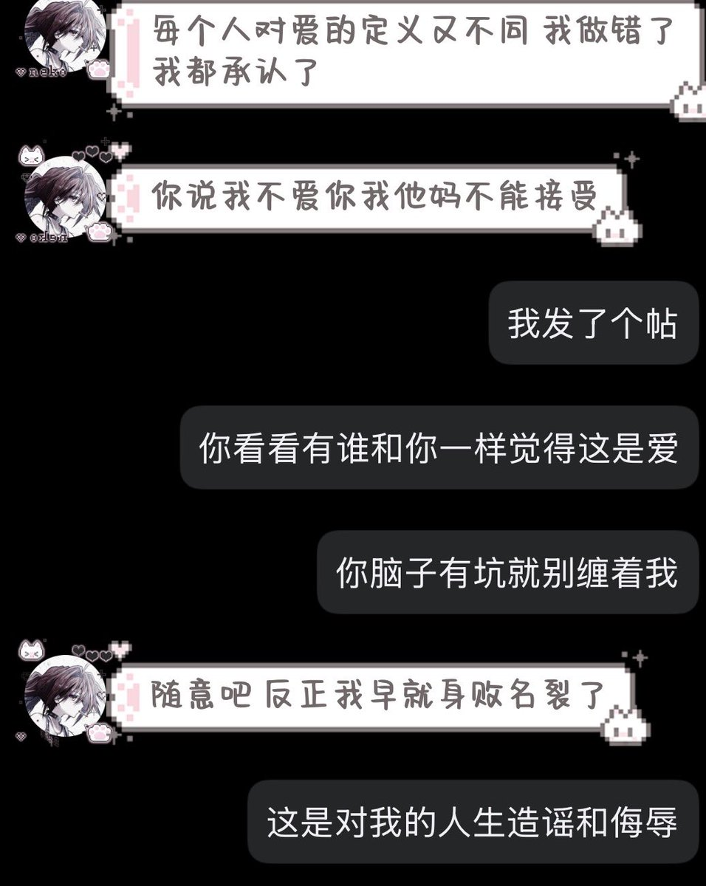
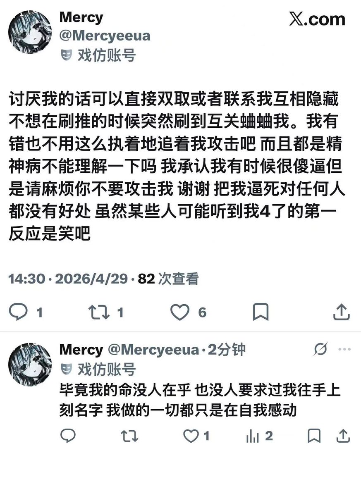

Rinko
@Rinko_zero8964
我一直说这人在卖惨实际上过可好了就是他自己的问题^ ^，心疼他的我祝你也被缠上，我祝贺他父母逃离原生mercy好吧


Rinko
@Rinko_zero8964
哥几个你们心疼他之前考虑一下他很有钱ok？他一件衣服800多你们心疼他干啥呀，，，他爸爸在韩国工作稳定钱也不少，他一边说他过的惨一边拿卖惨骗来的钱给自己买各种贵的吓人的东西，1.7他爸爸刚从韩国给他买的韩版17，死的时候都换上17pm了，九命猫当时不是也说了给mercy两千块钱他两天就花掉了吗（1 https://t.co/szEqlxyLNT
Rinko
@Rinko_zero8964
首先我没攻击你呀我说的都是是事实（^_^），不是你让随意的吗？你发太多死不死的了我都快不认识这个字了，不道歉还在这里卖惨不是装可怜感动自己是什么？不要说的好像自己付出了多少似的，拿精神病挡刀那就一辈子进精卫封闭🙏 https://t.co/i08bJn8JL7 https://t.co/Fmpaa2AOvW